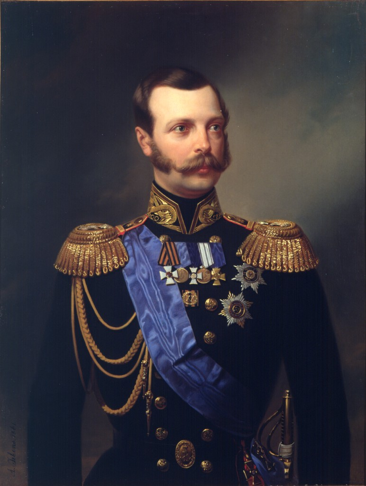
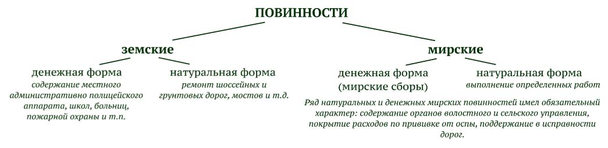
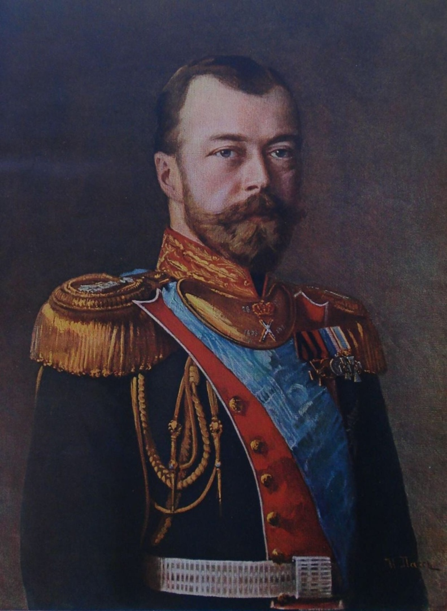
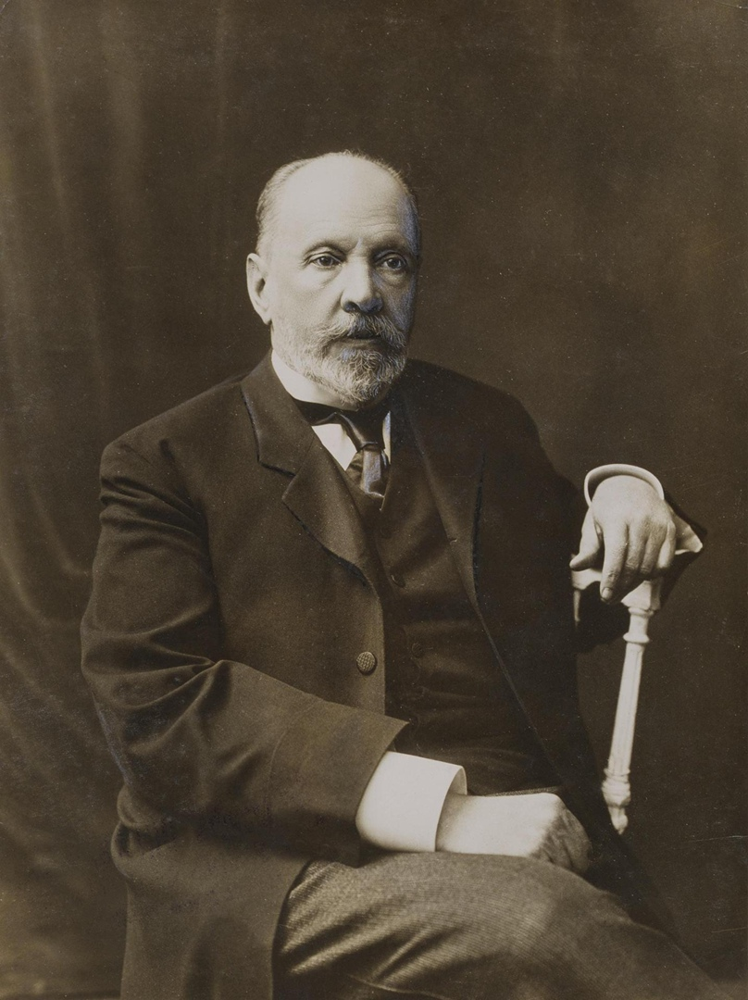
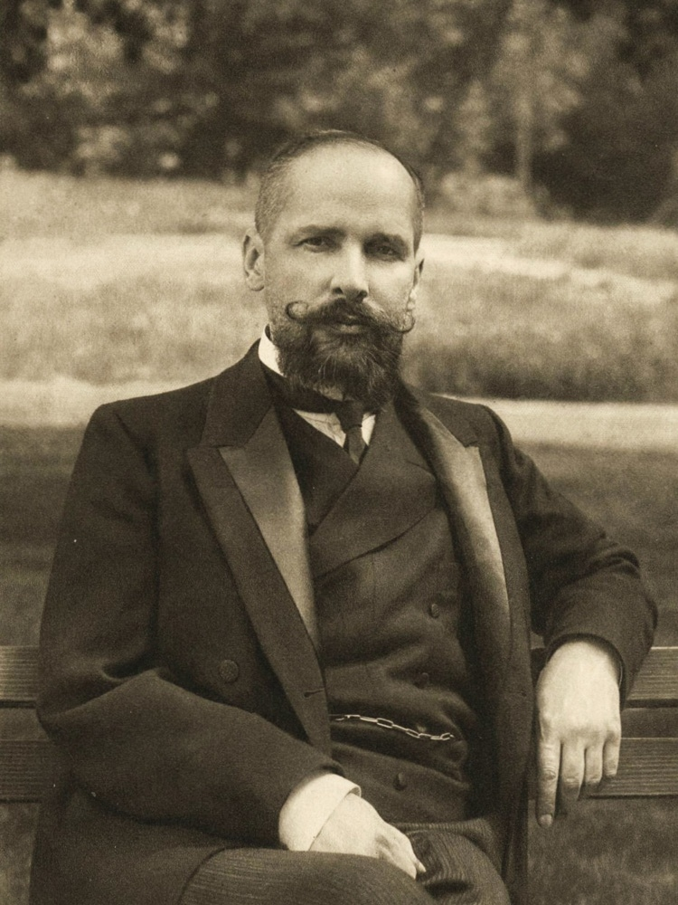

Изменения в налоговой системе, связанные с реформой 1861 г.
С именем Александра II (1818-1881, российский император с 1855) связаны самые значительные преобразования в экономической и политической жизни России XIX столетия. Одним из важнейших изменений была крестьянская реформа 1861 г.
19 февраля 1861 г. Александром II были утверждены Положения о крестьянах, а 5 марта того же года состоялось торжественное объявление «воли». Крепостные крестьяне были освобождены от крепостной зависимости с землей. Земля отдана была крестьянам в постоянное пользование с уплатой за нее определенного сбора.

В связи с проведением реформы 1861 г. в налоговой системе были осуществлены следующие важнейшие преобразования:
- была изменена система сбора промыслового налога,
- введено налогообложение земли,
- устанавливается подомовой налог,
- вводятся земские налоги и сборы,
- указом от 1 января 1863 г. винные откупа заменяются акцизными сборами со спиртных напитков (винным акцизом).
При этом сохранялась важная роль в системе государственных доходов следующих видов налогов - подушного налога, питейного и таможенного сборов, соляного налога, акциза на дрожжи (1866), акциза на керосин (1872), акциза на табак.
При Александре II система взимания промыслового налога была усложнена: налог стал подразделяться на основной (прежний патентный сбор) и дополнительный. Основной налог устанавливался в рублях в зависимости от разряда предприятия и класса местности. Дополнительный налог предприятия, обязанные представлять отчетность, платили в виде налога на прибыль по процентным прогрессивным ставкам (процентный сбор) и налога на основной капитал по твердой пропорциональной ставке - 15 коп. (позднее 20 коп.) с каждых 100 руб.
В России государственный поземельный налог был введен в 1875 г. в форме раскладочного налога, объектом обложения которого являются участки земли или доходы от владения или использования земли. Величина поземельного налога устанавливалась для каждой губернии и распределялась земской управой между отдельными владельцами земли.
Подомовой налог в России был введен в городах в 1863 г. в форме налога с недвижимого имущества. Обложению подлежали жилые дома, фабрики, заводы, театры, бани и строения с принадлежащими к ним постройками.
В эпоху царствования Александра II в 1851- 1864 гг. наряду с государственными прямыми налогами создается система земских налогов и сборов. Параллельно с системой налогов, пошлин и сборов в России действовала система повинностей. По уровню местного самоуправления повинности подразделялись на земские и мирские.

Налоговая система России с 1892 по 1917 г.
В период царствования Николая II обращают на себя внимание реформы, проводившиеся по инициативе таких государственных деятелей, как С.Ю. Витте и П.А. Столыпин.


С.Ю. Витте - русский государственный деятель, министр путей сообщения, министр финансов, председатель Комитета министров, председатель Совета министров. Период его деятельности был ознаменован огромным увеличением бюджета, широким развитием государственного хозяйства и крупными реформами в области финансового законодательства.
С 1892 по 1903 г. по главным отделам росписи общая сумма обыкновенных доходов по отчетам государственного контроля возросла примерно
в 2,1 раза (с 964,7 млн руб. до 2031,8 млн руб.), при этом доходы от казенных имуществ и капиталов возросли в 4 раза, поступления от косвенных налогов возросли в 2 раза, от регалий - в 1,7 раза, от пошлин - в 1,6 раза, поступления от прямых налогов - в 1,5 раза, поступления по выкупным платежам возросли в 1,2 раза, а доходы от продажи казенных имуществ снизились в 1,7 раза.
В этот период был введен только один новый прямой налог - квартирный налог, рассматривавшийся специалистами как «крайне неудачный суррогат подоходного налога». Налог уплачивался с расходов на квартиру. Кроме того, был повышен налог с городской недвижимости. Сбор с доходов от денежных капиталов был распространен на вклады в банковские учреждения.
В 1898 г. была реформирована система взимания промыслового налога. Для целей налогообложения вся территория России подразделялась по местностям на 4 класса, торговые предприятия - на 5 разрядов, промышленные - на 8; вводилось обложение личных промысловых занятий.
Прочие прямые налоги либо оставались в прежних размерах, либо понижались. В частности, уменьшению подвергся государственный поземельный налог, взимавшийся со всех земель кроме земель казенных.
В сфере косвенного обложения в период Витте отмечается резкое увеличение поступлений по всем видам налогообложения, рост доли этих налогов в общем объеме налоговых поступлений, значительное повышение ставок и расширение базы обложения. Повышение косвенного обложения происходило в два этапа. Первое повышение было произведено в конце 1892 - начале 1893 г. Оно связывалось с ликвидацией последствий неурожайных лет. Второе значительное повышение цен было произведено в 1900 г. и связывалось с событиями в Китае, поведшими к крупным сверхсметным расходам и грозившими дальнейшим осложнением международных отношений.

Существенные изменения в экономической политике России начала XX в. связаны с именем Петра Аркадьевича Столыпина, который возглавил правительство в 1906 г., в период серьезного экономического и политического кризиса. С его именем связывают радикальную аграрную реформу, которая получила название столыпинской. Эта реформа ознаменовала коренной поворот в аграрной политике России и потребовала изменений в налоговой системе.
Аграрная реформа потребовала отмены базового принципа организации сбора прямых налогов в России – круговой поруки,
которая в дореволюционной России означала способ обеспечения своевременного и полного сбора податей или налогов путем возложения ответственности за их уплату на крестьянскую общину в целом. Это означало, что теперь каждый крестьянин отвечал по своим податным обязательствам индивидуально.
Финансовыми специалистами, в том числе с участием С. Ю. Витте, при непосредственном участии П. А. Столыпина был разработан проект преобразования системы государственного управления и системы налогообложения, которым предлагалось увеличение государственного бюджета с 3 млрд до 10 млрд руб. В числе мер, предложенных для увеличения государственных доходов, было намечено:
- проведение полной переоценки недвижимого имущества с установлением его действительной стоимости и доходности;
- увеличение поступлений по прямым налогам за счет использования реальной стоимости и доходности недвижимости;
- существенное повышение акциза на водку, а также на вина, ликеры и шампанское;
- введение небольшого налога с оборота на все предметы производства как в пользу государственного бюджета, так и в пользу местных бюджетов;
- введение прогрессивного подоходного налога таким образом, чтобы "малоимущие классы были по возможности совершенно освобождены от всяких налогов";
- установление прожиточного минимума, в соответствии с которым должна быть установлена минимальная оплата труда;
- увеличение всех тарифов железнодорожных и почтово-телеграфных услуг для покрытия расходов на содержание соотвествующих служб.
Хотя налоговые реформы не были реализованы, но за счет ряда мер, в том числе чрезвычайных, удалось стабилизировать общую экономическую и политическую обстановку.
Налоги планировались по трем направлениям:
– прямые налоги – 264,5 млн руб. (21,9% всех налоговых доходов);
– косвенные налоги – около 710 млн руб. (58,9% всех налоговых доходов);
– пошлины – более 230 млн руб. (19,7% налоговых доходов).
Проект был подвергнут резкой критике министром финансов В. П. Коковцевым, а после убийства Столыпина в 1911 г. его реализация была отложена.